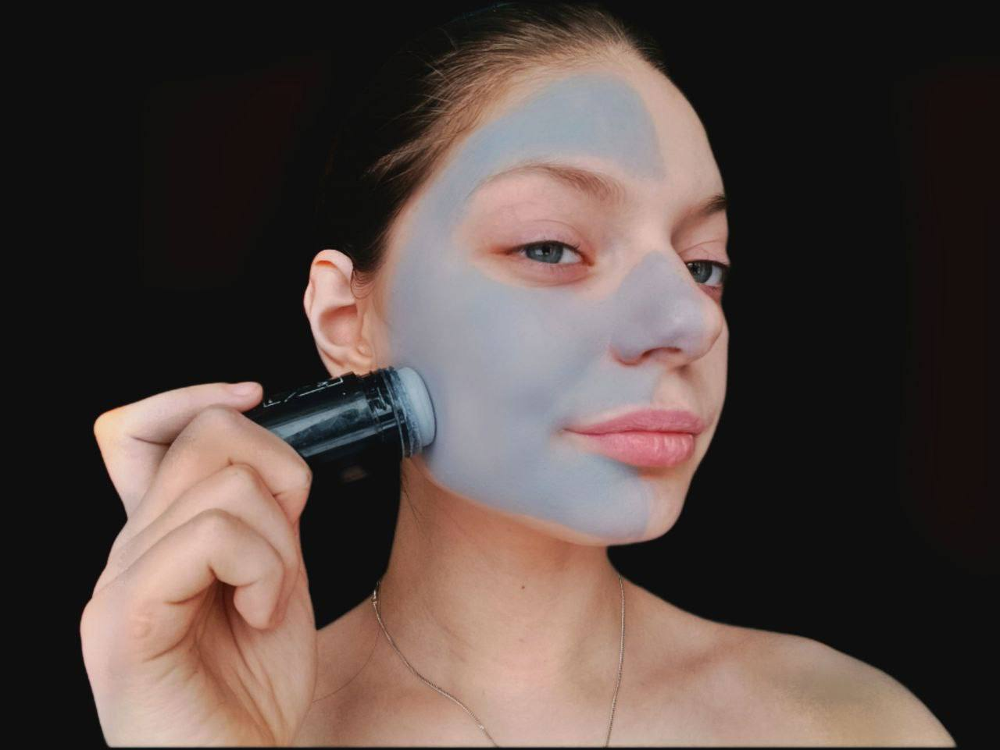
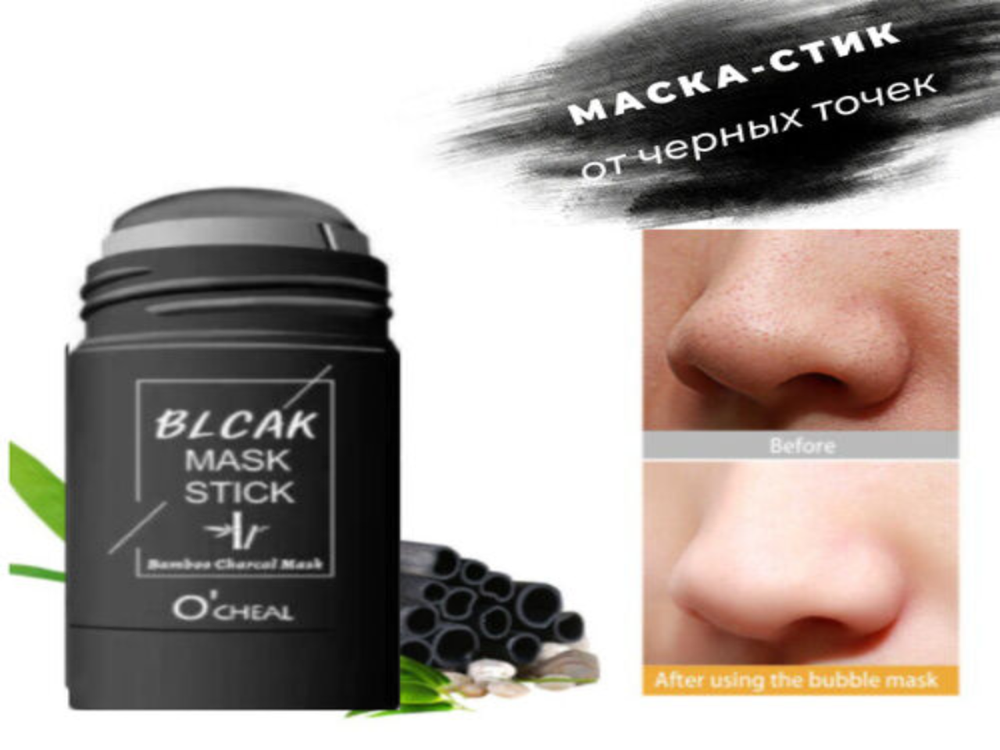

VISONA
Стик маска


Маска-стик – средство ухода нового поколения. Необычная форма карандаша распределяет полезный состав маски по коже и действует, словно ластик, стирая несовершенства.Благодаря муцину улитки глина не высыхает и не трескается, поэтому маска не высушивает дерму и не оставляет на ней шелушений. Кожа после использования остается мягкой и гладкой.
Как применять стик маску
Просто проведите стиком по очищенной от макияжа коже, оставьте на 10-15 мин, а затем удалите маску с помощью влажной салфетки/ватного диска или умойтесь тёплой водой. Благодаря содержанию увлажняющих и смягчающих ингредиентов в составе кожа не пересушена, она мягкая и гладкая, как у младенца!